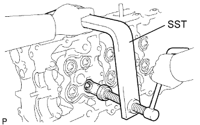
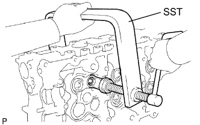
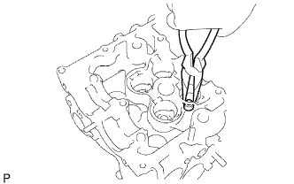

ГОЛОВКА БЛОКА ЦИЛИНДРОВ > РАЗБОРКА |
| 1. СНИМИТЕ ВПУСКНОЙ КЛАПАН |
|  |
С помощью SST сожмите пружину сжатия и снимите 2 кулачка тарелки клапанной пружины.
Снимите тарелку пружины, компрессионную пружину, клапан и гнездо пружины.
| 2. СНИМИТЕ ВЫПУСКНОЙ КЛАПАН |
|  |
С помощью SST сожмите пружину сжатия и снимите 2 кулачка тарелки клапанной пружины.
Снимите тарелку пружины, компрессионную пружину, клапан и гнездо пружины.
| 3. СНИМИТЕ САЛЬНИК ШТОКА ВПУСКНОГО КЛАПАНА |
|  |
С помощью острогубцев снимите сальник.
| 4. СНИМИТЕ САЛЬНИК ШТОКА ВЫПУСКНОГО КЛАПАНА |
С помощью острогубцев снимите сальник.
| 5. СНИМИТЕ ПОЛУКРУГЛУЮ ЗАГЛУШКУ |
| 6. СНИМИТЕ РЕЗЬБОВУЮ ЗАГЛУШКУ № 1 |
С помощью шестигранной головки на 6 мм выверните резьбовые заглушки № 1.
| 7. СНИМИТЕ РЕЗЬБОВУЮ ШПИЛЬКУ |
Выверните резьбовые шпильки.